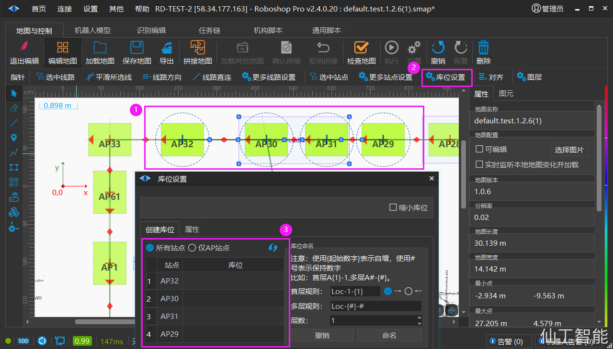
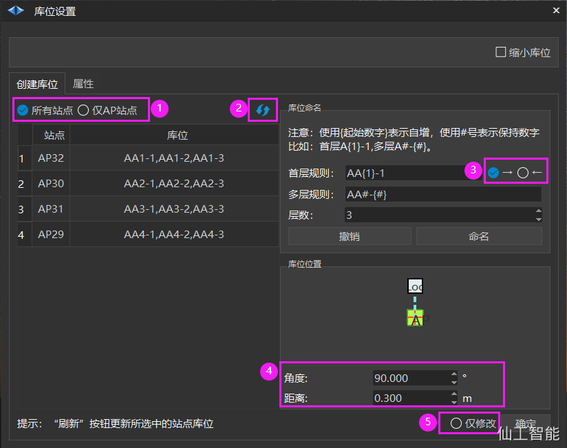

Wiki table of contents
发布说明（软件下载）
第一章：关于本手册
第二章：安装环境要求
第三章：首页
机器人
连接机器人
地图与控制
启用编辑
地图编辑
指针
优化线路
优化地图
选中线路
平滑所选线
线路直连
线路设置
选中站点
更多站点设置
站点对齐
图层
缩小图元
批量创建站点
库位设置
库位导入导出
创建库位
库位布局
库位任务链
库位属性
二维码设置
添加地图背景图片
橡皮擦
高级线
站点
路径
高级区域
二维码
库位
坐标变换
关联线
地图编辑注意事项
拼接地图
矫正地图
检查地图
运动和控制
地图管理
参数配置
重定位
运行状态
IO 配置
其他
任务链
模型文件
识别编辑
机构脚本
通用脚本
调度服务器
视觉服务器
自研叉车充电桩
RTK基站
PGV
高级配置
第四章：设置
第五章：其他
附录 A - 属性说明
附录 B - 其他实施方法
Robod(守护程序)
问题分析
注意事项
版权声明
header-v2
SEER Robotics
Last updated: May 07
Log In or Sign Up
创建库位
创建库位
命名规则
创建库位
设置库位排序策略
创建库位
Modified May 7, 2024
创建库位
一、
选择站点进行库位设置

1.
选择站点
2.
点击库位设置
3.
显示所选择的站点
二、
设置层命名规则
查看
（点击
创建库位
跳转到）
命名规则
详情。
三、
其他设置
